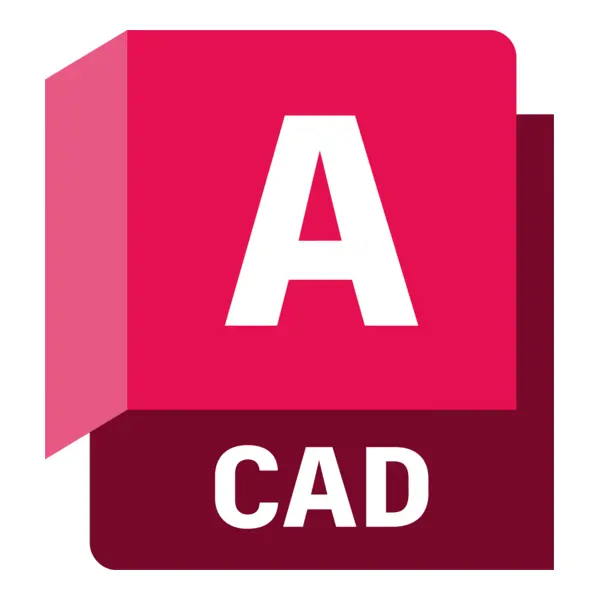

เครื่องไทเทรตอัตโนมัติ
Continuous Micro Automatic Titrator
รายละเอียดโครงงาน (Project Description)
ประดิษฐ์ขึ้นจากวิธีการทางวิทยาศาสตร์ที่เรียกว่า การไทเทรต คือการทดลองเพื่อใช้หาค่าความเข้มข้นของสารละลาย จากการทำปฎิกิริยาของสาร สามารถนำไปใช้ในอุตสาหกรรมได้ลายแขนง เช่น ทางการแพทย์ อาหารและยา เครื่องดื่ม โดยมีจุดมุ่งหมายให้มีคุณภาพเทียบเท่าและสามารถแก้ไขข้อจำกัดของเครื่องที่มีในท้องตลาดได้ และอำนวยความสะดวกให้กับบุคคลกรมากขึ้น
วีดิโอสาธิต (Video Demo)
เทคโนโลยีที่ใช้ (Technologies)

Poster & Results

ผลลัพธ์และการสาธิต (Results / Demo)
จากการทดลองพบว่าการไทเทรตด้วยเครื่อง CMAT มีผลการทดลองที่เทียบเท่ากับการไทเทรตปกติ แต่มีความคลาดเคลื่อนน้อยกว่าการไทเทรตแบบปกติถึง 3 เท่า